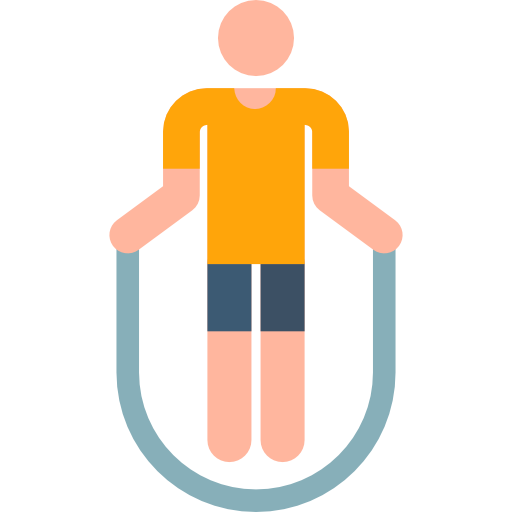
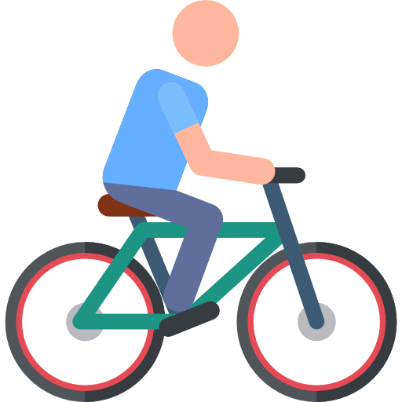

Что же такое
Здоровый Образ жизни?
По настоящему
ЗОЖ – образ жизни человека,
направленный на профилактику болезней и укрепление здоровья.
Какой бы совершенной не была медицина, она не может избавить
каждого от всех болезней. Человек – сам творец своего здоровья,
за которое надо бороться.
По определению Всемирной
организации здравоохранения (ВОЗ) «здоровье – это состояние
физического, духовного и социального благополучия, а не только
отсутствие болезней и физических дефектов». Известно, что наше
здоровье на 10% определяют наши гены, на 20% окружающая среда,
в которой мы живём, ещё 10% уровень медицинского обслуживания,
а остальные 60% — здоровый образ жизни.
Как соблюдать Здоровый Образ Жизни?
- Всегда хорошо высыпайтесь.
- Зарядка!
- Режим питания!
- Избавьтесь от лишнего веса.
- Откажитесь от вредных привычек.
- Личная гигиена!
- Создайте режим дня.
- Спорт — залог красоты и здоровья.
- Закаляйся если хочешь быть здоров!
- Умейте управлять своими эмоциями.
Здоровый образ жизни семьи – залог здоровья ребёнка
ребенок рос в здоровой семье?
Вместе везде
Регулярно совершайте общие прогулки. Но не ограничивайте их походами по магазинам. Ходите в парк, выезжайте на природу, посещайте детские открытые игровые площадки.
Ешьте правильную пищу
Приучайте детей к здоровому питанию. Избегайте посещения кафе, где подается фастфуд. Добавьте в рацион больше овощей и фруктов, вместе пейте больше чистой воды.
Помните про подвижность
Не забывайте про игры с мячом, посещение бассейна, катание на лыжах и коньках. Утренняя пробежка – отличный способ зарядиться энергией на весь предстоящий день не только для вас, но и для детей.
Единое хобби
Приобщайте к своим увлечениям ребенка. Это не только станет подспорьем в его воспитании и общем развитии, но и объединит семью интересным хобби.
Отказ от вредных привычек
Помните, что ребенок всегда смотрит на своих родителей и старается во всем им подражать. Откажитесь от курения, алкоголя, калорийных перекусов и регулярных вечеров перед телевизором.
Проводите больше времени с ребенком
Ребенок растет счастливым, когда родители ему дарят много любви, внимания, и заботы. Благодаря этому ребенок обретет уверенность и самоуважение.


СПОРТ – ЭТО ЗДОРОВЬЕ


Привычка вырабатывается в течении 21 дня. После того как это станет частью твоей жизни, ты поймешь, что уже не можешь без этого.
 Зарядка
▲
Зарядка
▲
Утренняя зарядка улучшит метаболизм, поможет зарядить энергией. Организм привыкнет к умеренной физической нагрузке и человек будет бодрым и активным весь день. При движениях тела, рук, ног улучшается деятельность сердца и сосудов, нормализуется работа нервной cистемы.
 Бег трусцой
▼
Бег трусцой
▼
Бег трусцой стимулирует сердечно-сосудистую систему, способствует укреплению суставов и повышению тонуса мышц. Во время бега у спортсмена улучшается кровообращение. Ткани начинают получать больше кислорода и питательных веществ. Ускоряются обменные процессы.
Прыжки со скакалкой ▼
Прыжки со скакалкой – это проверенное средство для работы над своей фигурой. Подкачанные ноги, красивая линия плеч, подтянутые руки, стройные бедра и ягодицы, плоский живот – если вы мечтаете о такой фигуре, то вам просто необходимо начать тренироваться со скакалкой.
 Скандинавская ходьба
▼
Скандинавская ходьба
▼
Улучшение кровообращения. Тренировка плечевого пояса Профилактика остеохондрозов: укрепление мышц, уменьшение нагрузки на позвоночник. Возможность длительной ходьбы в разы увеличивает все ее полезные свойства, в сравнении тем же бегом.
 Туризм
▼
Туризм
▼
Правильно организованное путешествие укрепляет здоровье человека, повышает выносливость, закаляет, развивает силу, волю, мужество, инициативу, настойчивость, самостоятельность, дисциплинированность, ответственность, повышает трудовую активность.
Поездка на велосипеде ▼
Регулярные поездки на велосипеде помогают вам тренировать мышцы ног, груди, спины, рук. Благодаря чему улучшается их форма и одновременно повышается выносливость мышц. Снижение стресса. Поездки на велосипеде – самый простой и быстрый способ получить дозу гормонов счастья.
Правильное питание основа ЗОЖ
Реакция Организма
- Личное счастье
- Вы станете умнее
- Вы станете энергичнее
- Здоровый сон
- Стресс станет меньше
- Укрепление иммунитета
- Сердце и сосуды скажут вам «спасибо»
- Укрепление костей
- Здоровая и привлекательная кожа
- Будете дольше жить
Рекомендуемые продукты
- Овощи(сырые, запеченные, отварные) и фрукты
- Все виды съедобных грибов
- Салат листовой, любая зелень, шпинат, щавель
- Чай и кофе без сахара и добавок
- Питьевая негазированная вода
- Мясо (баранина, индейка, говядина)
- Рыба (форель, сельдь, треска и т. д.)
- Яйца и кисломолочные продукты
- Цельнозерновые крупы
- Орехи (одна-две маленьких горстки в день)
Вредные продукты
- Алкогольные напитки
- Майонез,Кетчуп
- Копчености, колбасы, сосиски
- Мясные и рыбные консервы
- Рафинированный сахар
- Магазинные варенья и джемы
- Сладкие и кондитерские изделия
- Сдобные изделия
- Фастфуд и полуфабрикаты
- Газированные напитки
Таблица каллорийности продуктов
| Название | Белки | Жиры | Углеводы | Ккал |
|---|
Найдите рецепт для вашего блюда!
Лучшие сайты про ЗОЖ
Как бросить вредные привычки
И начать правильно питаться
и заниматься спортом? Рекомендуем к посещению!
Все о ЗОЖе: видео-уроки по йоге и фитнесу, детокс-комплексы, дыхательные упражнения, рецепты полезной еды, статьи об уходе за собой. В разделе «Цели» можно выбрать программу и вместе с инструкторами и другими участниками двигаться к заветному результату.
Блог с красивыми фотографиями и полезными текстами о здоровом питании и образе жизни. Рецепты сладостей, которые не вредят фигуре, 101 блюдо из сезонных овощей, лучшая органическая косметика, быстрая утренняя йога, онлайн-программа детокса.
Начать знакомство с сайтом лучше всего вот с этой статьи. Самый настоящий гид, в котором собраны все полезные тексты сайта, отсортированные по темам. Есть энциклопедия, список основных понятий, раздел о различных видах спорта.
Портал создан при поддержке Минздрава России. Комплексные тренировки, диеты и правильное питание, справочные материалы по ЗОЖ, калькуляторы и тесты — здесь есть все, чтобы путь к здоровью был легким и увлекательным.
Сайт для всех, кто решил следить за питанием и фигурой. Тут есть счетчик калорий, рецепты полезных вкусных блюд и комплексы упражнений, которые можно самостоятельно выполнять дома. Чтобы отслеживать прогресс, надо зарегистрироваться.
Здесь есть все: статьи о здоровом образе жизни, программы правильного питания, аннотации к лекарствам, бесплатные консультации экспертов, новости науки, советы по воспитанию детей и отношениям с собой и окружающими.